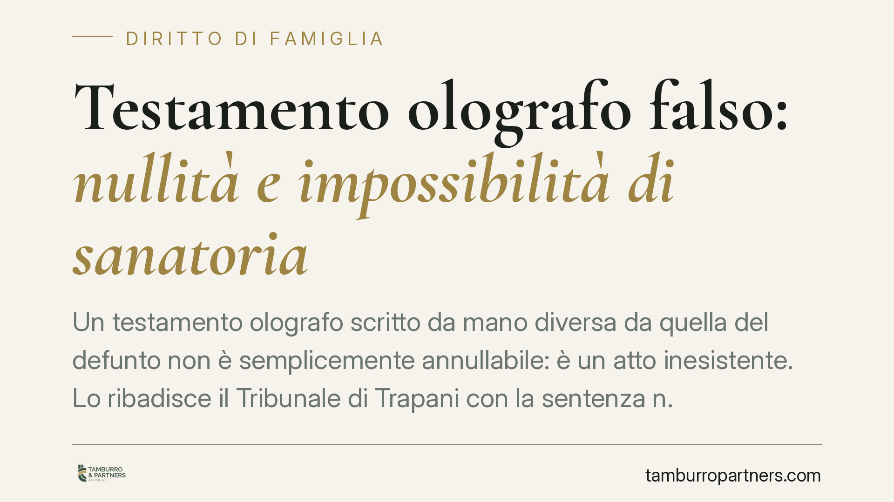

Testamento olografo falso: nullità e impossibilità di sanatoria
Un testamento olografo scritto da mano diversa da quella del defunto non è semplicemente annullabile: è un atto inesistente. Lo ribadisce il Tribunale di Trapani con la sentenza n. 178/2026, in linea con la Cassazione. Quando il testo è integralmente falso, nessuna conferma degli eredi può salvarlo. Vediamo perché e come difendersi.

Il caso e il principio
Il testamento olografo è la forma più semplice di disposizione delle proprie volontà: non richiede notaio né testimoni. Proprio questa semplicità lo espone al rischio di falsificazione. Quando il documento prodotto dopo la morte non è stato scritto dal presunto testatore, si apre una questione delicata, che il Tribunale di Trapani ha affrontato nella sentenza n. 178/2026, resa dal giudice Di Rosa.
La pronuncia distingue nettamente due situazioni. Un conto è il testamento che presenta vizi formali o manca di qualche requisito; altro è il testamento interamente apocrifo, cioè scritto da una persona diversa dal defunto. Nel primo caso si parla di nullità sanabile; nel secondo, di atto radicalmente inesistente, non recuperabile in alcun modo.
Inquadramento normativo
L'art. 602 del codice civile stabilisce i requisiti del testamento olografo: deve essere scritto per intero, datato e sottoscritto di mano del testatore. L'autografia non è un dettaglio, ma l'elemento che garantisce la genuinità e la riconducibilità delle volontà alla persona.
L'art. 606 c.c. gradua le conseguenze dei difetti. Il primo comma commina la nullità quando manca l'autografia o la sottoscrizione. Il secondo comma prevede invece l'annullabilità per gli altri difetti di forma, con un termine di cinque anni per far valere il vizio.
Qui entra in gioco l'art. 590 c.c., sulla cosiddetta *conferma*: gli eredi possono rinunciare a contestare un testamento nullo, dandovi volontaria esecuzione. È la norma che consente di «salvare» le volontà del defunto nonostante un vizio formale.
Il punto decisivo è che la conferma presuppone pur sempre un testamento esistente, sia pure viziato. La giurisprudenza di legittimità è costante: quando il documento è integralmente falso, non esiste alcuna manifestazione di volontà del defunto da confermare. Non c'è nulla da sanare perché non c'è nulla di autentico. La conferma dell'art. 590 c.c. resta quindi inapplicabile.
Implicazioni pratiche
Per chi riceve o detiene un testamento olografo, la distinzione ha conseguenze concrete.
Se il testo contiene imprecisioni formali ma proviene dalla mano del defunto, gli eredi possono scegliere di eseguirlo comunque, consolidandone gli effetti. La successione prosegue sulla base di quelle disposizioni.
Se invece il testamento è falso nella scrittura, il quadro cambia del tutto. L'atto è tamquam non esset, come se non esistesse. La successione si apre allora secondo le regole della legge (successione legittima) o sulla base di un eventuale testamento valido anteriore. Gli eredi apparenti indicati nel falso non acquistano alcun diritto.
Chi vuole contestare l'autenticità deve agire con la querela di falso, il procedimento con cui si accerta giudizialmente la non genuinità di un documento. In questi giudizi è spesso decisiva la consulenza tecnica d'ufficio grafologica, che confronta la scrittura contestata con scritti certi del defunto. Attenzione: chi affermi la falsità ha l'onere di provarla, e la querela di falso è lo strumento tecnico corretto, non una semplice contestazione generica.
Va ricordato anche il profilo penale. La formazione di un testamento falso può integrare il reato di falsità in scrittura privata, con conseguenze che vanno oltre la vicenda successoria.
Cosa fare in concreto
- Non eseguite il testamento sospetto. Prima di accettare l'eredità o dare attuazione alle disposizioni, verificate che la scrittura sia riconducibile al defunto, specie se emergono incongruenze nella grafia o nella data.
- Conservate scritti certi del defunto. Lettere, documenti firmati, scritture private autentiche servono come termine di paragone per l'eventuale perizia grafologica.
- Attivatevi con la querela di falso. Se ritenete il documento apocrifo, è lo strumento processuale corretto per ottenere l'accertamento giudiziale della falsità.
- Non confidate nella «sanatoria». La conferma degli eredi ex art. 590 c.c. non recupera un testamento interamente falso: consigliamo di non assumere impegni basati su quel presupposto.
- Valutate una consulenza tempestiva. I termini e le strategie cambiano a seconda che si tratti di nullità, annullabilità o falsità: un inquadramento preliminare evita scelte irreversibili.
La prudenza, in materia successoria, protegge tanto chi ha ricevuto una disposizione autentica quanto chi rischia di esserne illegittimamente escluso.
Ogni famiglia ha il suo equilibrio.
Separazione, divorzio, affidamento, assegno: se vuoi un confronto riservato su una specifica situazione, scrivi allo studio. Ti rispondiamo entro un giorno lavorativo.